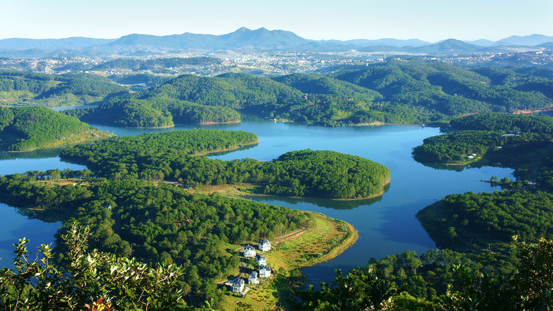
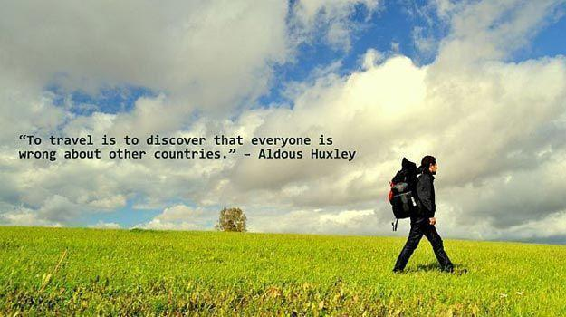

TRAVELLING BLOGS
Let's see some of my travelling blogs
What is Travelling ?
.jpg)
Travlling can be defined basically as the activity of going from one place to another, especially over a long distance. For example, go to the foreigns,... In my opinion, travelling is not only going to somewhere, but also is a valueable experience to expand our look about the world.
Where have I travelled to ?
Personally, I haven't travelled to another countries yet but I've visited many places in Vietnam. Let me tell you guys about that. First, I went to the North of Vietnam where the capital city locate at and visited Ho Chi Minh President's Mausoleum. Moreover, I also went to Sapa which is the first place having snow of Vietnam, then I've gone to the majestic mountain of Da Lat where tourists find peaceful and comfortable , then I had some wonderful moments at the west side of Vietnam (Phu Quoc, Can Tho, Ben Tre,...) with my parents
Why do I find travelling interesting ?
Honestly, travelling have become a vital part in my spiritual life. It helps me to release stress and relax after a long time studying and working so hard. What's more, I consider travelling as a lesson that are more realistic, I also study druing my trips but those are not boring lessons in schools, those are interesting lessons which you can understand them through not only book and documents but also experience.
ĐÀ LẠT
The wonderful place for visiting in Vietnam
DA LAT NIGHT MARKET
Dalat Night market, located right in the city center , is a good place to do some late night shopping, but above all, a great experience that you can not skip when visiting Dalat
DATANLA WATERFALL
Datanla waterfall is 5 km south of Dalat. You can not only visit the waterfall for the view, but you can also participate in adventurous activities such as canyoning, abseiling and even a roller coaster
XUAN HUONG LAKE
Xuan Huong Lake is a famous tourist attraction in Dalat. Situated in the center of Dalat city, it is an artificial lake with approximately 5 km2 circumference, and 25 ha wide. Xuan Huong Lake has long been famous for immerse pine forests, green lawns, and wonderful flower gardens. It is also a favorite rendezvous for tourists who love walking or using stagecoach to visit Dalat city.
TRUC LAM PAGODA
Truc Lam Pagoda (or Truc Lam Zen Monastery) is the largest pagoda in Dalat, a city in the central highlands of Vietnam. The pagoda is hidden in the mountains and forests about 7 kilometers from the center